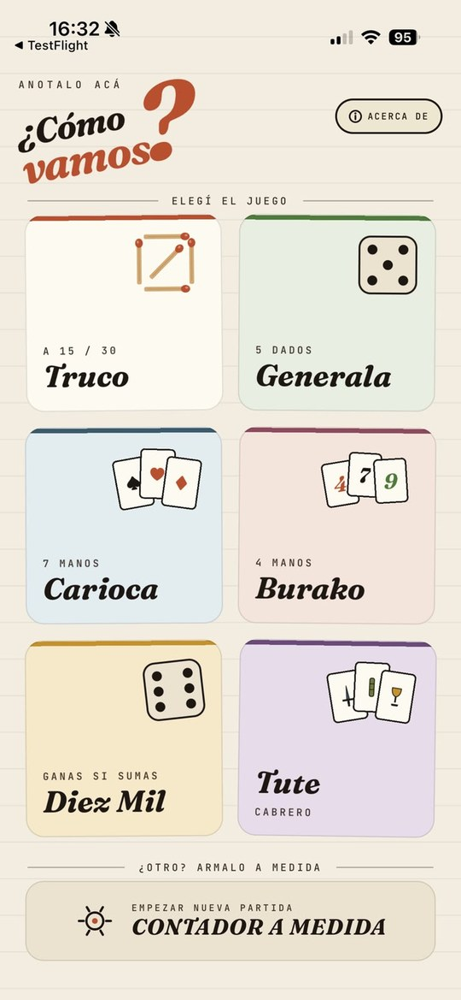
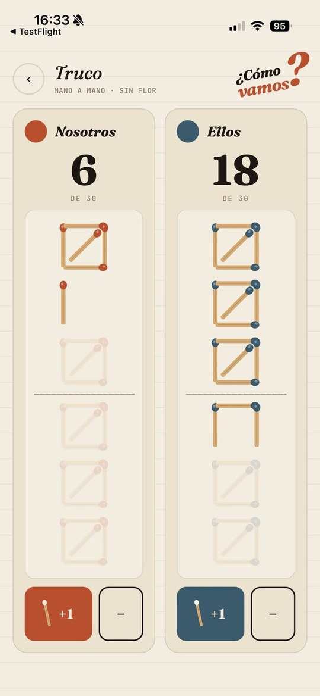
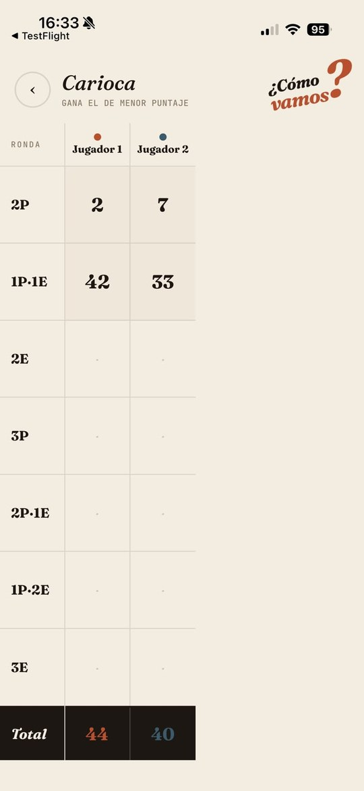

¿Cómo vamos?
anotalo acá
El anotador para las tardes de mate, playa y mesas de bar. Truco, Generala, Tute y más — sin papel ni lapicera.
Gratis · sin registro · sin publicidad · offline



Los juegos
- TrucoFósforos, a 15 o 30, con o sin flor
- Generala11 categorías, con servida
- Tute cabreroT·U·T·E y último en pie
- BurakoMano a mano, gana el que menos suma
- CariocaLas 7 manos canónicas
- Diez MilAcumulador con regla de progreso
- A medidaArmá tu propio contador